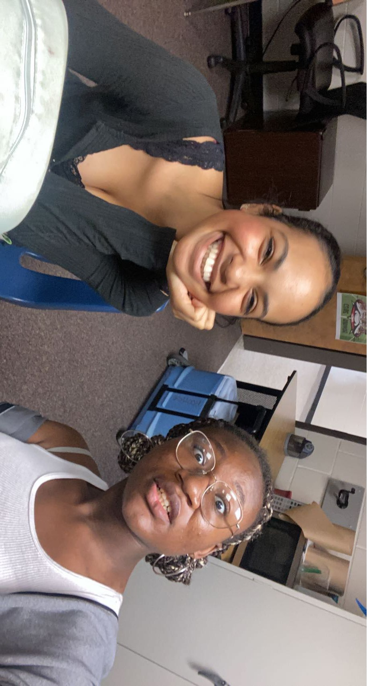
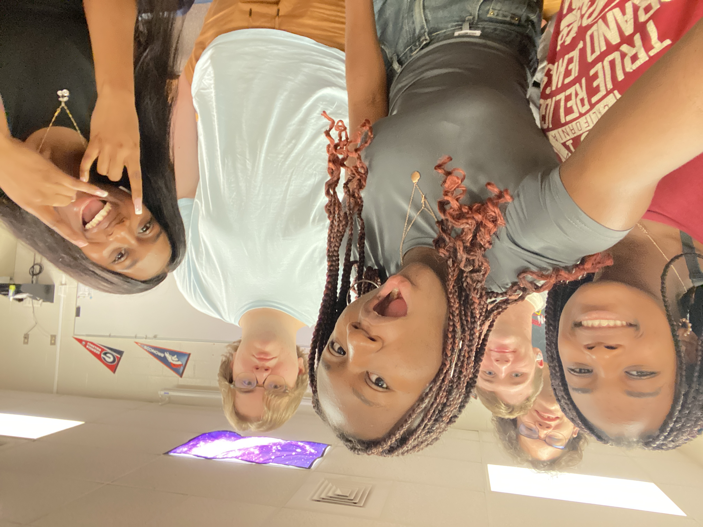

My Projects
Fashion Club

Fashion Club is definitely a project that I had the most fun participating in. I joined this club my junior year of high school and hosted my school's fashion show. It felt awesome working together with my friends on designs and pitching to our president ideas we could implement in our future meetings!
Lunch Bunch

Lunch Bunch was the first club I joined after transferring during my sophomore year of high school. It is a socially inclusive club that fosters connections with students with autism. I enjoyed hanging out with my classmates, playing games, singing karaoke, and simply talking about our day. My most significant high school accomplishment was becoming president of Lunch Bunch. This indicates that Lunch Bunch has a unique place in my heart because it accepted me when I felt isolated.
FCCLA

FCCLA is my school's culinary arts association. I was appointed as the organization's Membership Director, a position I've held for three years. In this position, I am responsible for assigning attendance points to members and calculating finances. Because it is a cooking organization, we prepared a variety of foods to go with the theme of our subsequent meetings. Furthermore, we hold our Kid's Cook Club once a month as a means to cook and engage with our school's middle and elementary students.